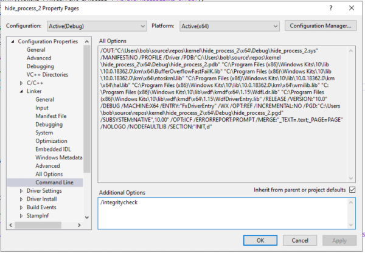

# Standard Loading Methods
These are standard/legitimate methods to load a kernel driver
that is either signed or test-signed.
## OSR Driver Loader
This is an easy and convenient way of loading drivers.
•
https://www.osronline.com/article.cfm%5Earticle=157.htm ◇ I use the WINNET version (no idea what some of the diff versions are)
To load:
1.
Register Service2.
Start ServiceUnload by stopping and unregistering.
### Potential Errors
#### The requsted control is not valid for this service
Happens when unloading because you haven't set a DriverUnload routine.
#### ACCESS DENIED / Trouble loading
If you get
ACCESS DENIED or other problems when loading, try enabling
/integritychecks when compiling your driver.
## Load driver manully using sc.exe
sc.exe controls services.
https://ss64.com/nt/sc.htmlRun all of this from an Administrator cmd/powershell prompt.
Loadcp driver.sys C:\Windows\system32\drivers\ -verbose -force
sc.exe create driver.sys type= kernel start= demand error= normal binPath= C:\Windows\system32\drivers\driver.sys DisplayName= driver.sys
sc.exe start driver.sys
sc.exe stop driver.sys
sc.exe delete driver.sys
## Load driver using PowerShell script
Alternatively, the process above is available as a PowerShell script.
Source:
•
https://www.ired.team/miscellaneous-reversing-forensics/windows-kernel-internals/loading-a-windows-kernel-driver-osr-driver-loader-debugging-with-source-code#loading-a-driver-via-command-prompt-windbgDisable script prevention:
Set-ExecutionPolicy Bypass -Scope ProcessSave below script as
.ps1 and execute as Administrator
function Install-Driver($name)
{
$cleanName = $name -replace ".sys|.\\", ""
sc.exe stop $cleanName
sc.exe delete $cleanName
cp $name c:\windows\system32\drivers\ -verbose -force
sc.exe create $cleanName type= kernel start= demand error= normal binPath= c:\windows\System32\Drivers\$cleanName.sys DisplayName= $cleanName
sc.exe start $cleanName
}
## Load driver using WinAPI
•
https://docs.microsoft.com/en-us/windows-hardware/drivers/ddi/wdm/nf-wdm-zwloaddriver•
https://github.com/hfiref0x/DSEFix/blob/master/Source/DSEFix/instdrv.c - Service Manager APIs
•
https://github.com/Meowoverflow/Rootkits_Subverting_the_Windows_Kernel/blob/master/code/04.load_driver_the_correct_way/loader.cpp - Using SCM - Service Control Manager
## ZwSetSystemInformation
• From Rootkits: Subverting the Windows Kernel (untested)
◇
https://github.com/Meowoverflow/Rootkits_Subverting_the_Windows_Kernel/blob/master/code/03.load_driver_using_quick_dirty_way/main.cppYou can use ZwSetSystemInformation with SystemLoad AndCallImage parameter to load your driver into pageable memory.
ProblemsIt loads the driver into pageable memory, meaning your driver can swapped from memory to disk at any point.
This can cause problems for you.
Solution? Copy your driver's code into non-pageable memoroy once loaded (don't know how).